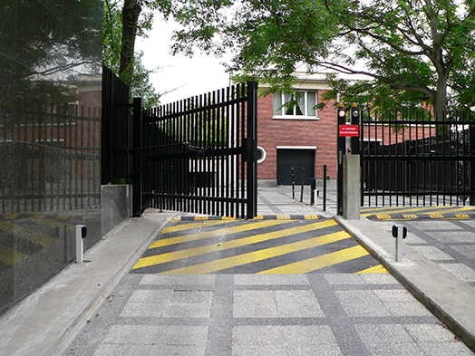
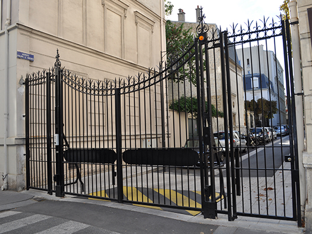
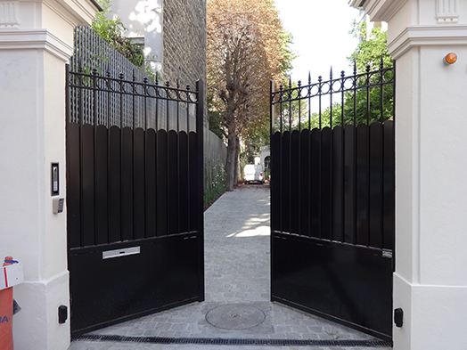

- 
- 
- 
PORTAILS BATTANTS
Le portail battant EN ACIER fabrication Picard a été conçu pour durée et est fabriqué sur mesure car chaque installation est unique. Portail ouverture à la française ou à l'anglaise selon les situations, à 1 ou 2 vantails symétriques ou asymétriques. Il peut être décliné selon les goûts en tôle pleine, tous types de barreaudages et/ou ornements. De plus, il est équipé d'un système de déverrouillage en cas de panne autre qu'électrique et d'un déverrouillage automatique en cas de panne de courant.